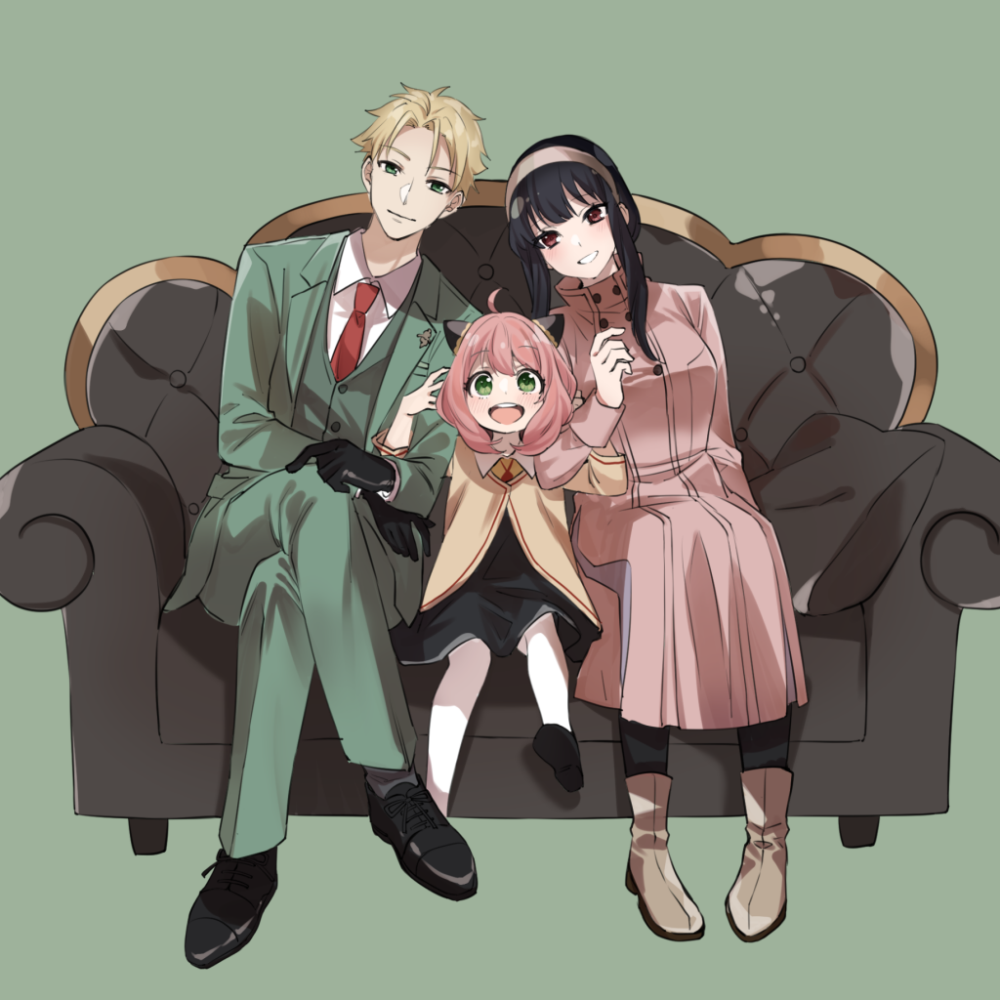

My Parents
My parents met when they were kids as they grew up in the same neighborhood. They didnt really talk, but my Dad always thought my mom was pretty. Later after my Dad go back from a Mission he decided to persue my Mom and found out what collage classes she was taking. He then began to take those same classes and study with her. The rest is history.
More Information

My Oldest Sisters
My oldest sister is married with a one year old. They are all super kind and do their best to help me. She is very smart and loves to have fun with people. There one year old daughter is super cute as well and loves to explore the world and copy what others are doing.
More Information
My Middle Sister
My middle Sister is the most independent my family. However she is a nurse and is always taking care of people. She loves games, books, and DnD. Her and her husband are always able to have fun with their shared hobbies.
More Information